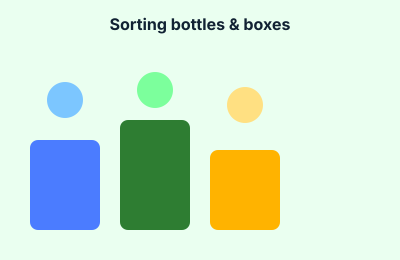
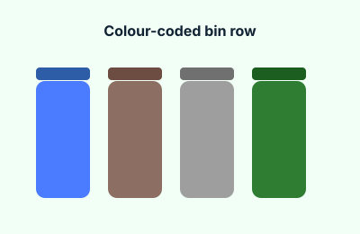
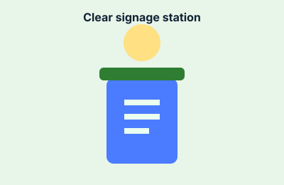
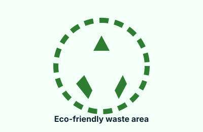

Smart Recycling Gallery
A look at what good sorting looks like around school.




Note: these are simple illustrations standing in for real photos. Drop actual photos into the
images/ folder and update the src attributes above to replace them.